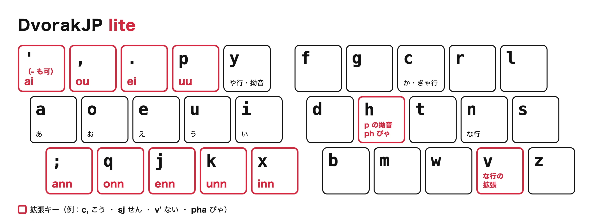

DvorakJP lite とは？
DvorakJP をご存じない方は、まずはDvorakJP の解説をご一読ください。
DvorakJP lite は、DvorakJP の効率的な拡張ローマ字入力の仕組みを維持しつつ、普通のローマ字入力を妨げないように見直した、いわば軽量版 DvorakJP です。打鍵数の削減につながらない拡張は削ぎ落としました。一般的なローマ字入力の打ち方に干渉せず、ご自身のペースで拡張ローマ字を徐々に取り入れられることを目指しています。
ローマ字テーブルの差替えだけで導入でき、Dvorak 配列の方はもちろん、QWERTY 配列の方でも気軽に試せます。

打鍵効率比較
打鍵効率を以下で定義します。値が大きいほど、少ない打鍵数で日本語を入力できることを示します。
コーパス別の打鍵効率
| コーパス | 文 | QWERTY | DvorakJP | DvorakJP lite | AZIK | DvorakJP lite ＋ 短縮拡張 |
|---|---|---|---|---|---|---|
| JSUT | 4,907 | 0.4595 | 0.4968 | 0.4969 | 0.5243 | 0.5290 |
| ITA | 412 | 0.4867 | 0.5223 | 0.5225 | 0.5512 | 0.5548 |
| Tatoeba | 244,964 | 0.4719 | 0.5044 | 0.5045 | 0.5357 | 0.5375 |
| livedoor | 112,818 | 0.4770 | 0.5166 | 0.5167 | 0.5450 | 0.5492 |
| Wikipedia | 12,912 | 0.4409 | 0.4924 | 0.4926 | 0.5165 | 0.5205 |
| 合計 | 376,013 | 0.4727 | 0.5091 | 0.5093 | 0.5388 | 0.5418 |
日本語の文章（JSUT（CC BY-SA 4.0）、ITA コーパス（CC0）、Tatoeba（CC BY 2.0 FR）、livedoor ニュースコーパス（CC BY-ND 2.1 JP）、京都大学 Wikipedia 注釈コーパス（CC BY-SA 4.0））で計測。英字・数字を含む文は除く。AZIK のローマ字テーブルは AZIK総合解説書の仕様による。計測スクリプト： tools/keystrokes.js
設計思想
1. 「ん」の後でも最小の打鍵数で打てるようにする
DvorakJP では、n の後の拡張キーが「な行拡張」になります（nj ねん、n. ねい、np ぬう）。また、nh は「にゃ行」の拗音です。そのため、母音の直後の「ん」に、これらのキーで始まる音が続くときは、n を 2 回打って「ん」を確定させる必要がありました。
DvorakJP lite では、な行拡張を v に移し、n の拗音拡張も使わないことで、この衝突を解消しました。そのため、DvorakJP では余計な打鍵が必要だった「ん」の後の入力も、通常のローマ字入力と同じ打鍵数で入力できます。
| 単語 | DvorakJP | DvorakJP lite |
|---|---|---|
| 鉛筆（えんぴつ） | ennpitu（7 打。enpitu だと「えぬういつ」） | enpitu（6 打） |
| 温情（おんじょう） | onnj,（5 打。onj, だと「おねん、」） | onj,（4 打） |
| 隠蔽（いんぺい） | innp.（5 打。inp. だと「いぬう。」） | inp.（4 打） |
| 全員は（ぜんいんは） | zjinnha（7 打。zjinha だと「ぜんいにゃ」） | zjinha（6 打） |
そのうえで、拡張ルールを次の方針で見直しています。
- 打鍵数を減らす拡張は、普通のローマ字で使わない組み合わせに移して残す。
- な行拡張は
nの代わりに、Dvorak 配列でnの真下にあるvで打つ（vjねん、v,のう） - ぴゃ行は、Dvorak 配列で
pとyがどちらも左手の上段にあり、pyaが同じ手の連続打鍵になって打ちにくい。そこで、hを使う拗音拡張のうち、右手のhを使って左右交互に打てるphだけを採用する（phaぴゃ、ph,ぴょう）。phは普通のローマ字では使わない組み合わせなので、衝突しない
- な行拡張は
- 打鍵数を減らさない拡張は、原則として採用しない。
- ぴゃ行以外の
h、nの拗音拡張は採用しない。この拡張は、yの代わりに使っても打鍵数は減らない（cnaもcyaも 3 打）が、拗音の子音とh・nを右手で続けて打てる（アルペジオ打鍵）という DvorakJP の工夫である。DvorakJP lite では、この利点よりも、普通のローマ字との互換性と覚えるルールの少なさを優先し、主要な拗音は QWERTY 同様「子音（右手）、y＋母音（左手）」で打つ。
- ぴゃ行以外の
2. QWERTY で身に付けたローマ字入力の規則をそのまま使える
拡張ルールを普通のローマ字で使わない組み合わせに限ったので、DvorakJP の拡張と共存しながら、かなを打つ一般的なローマ字のつづりはすべてそのまま使えます（z. … などの一部の記号入力は、拡張入力に使うため除きます）。
たとえば、「ん」を n 1 回で入力する（kanji → 漢字）といった、QWERTY で身に付けたローマ字入力の規則を覚え直す必要はありません。拡張入力を覚えなくても今までどおり入力でき、必要に応じて少しずつ拡張入力を取り入れられます。
3. 記号キーの自由度を担保する
「ア段＋い」は ' と - のどちらでも打てます（k' / k- → かい）。Dvorak 配列の上段左の記号キーは、好みで ' と - のどちらにしていても使えます。
4. 競合しない範囲で AZIK・gACT10 の短縮入力を採用する
DvorakJP のローマ字テーブルを軽量化した分、新たなカスタマイズの余地ができました。そこで実験的に、AZIK と gACT10 から、通常ローマ字や DvorakJP lite の拡張入力と競合しない拡張だけを採用し、さらに打鍵数を減らせるようにしています。
この短縮入力を含むローマ字テーブルは「DvorakJP lite ＋ 短縮拡張」版として配布します。実験中のため、予告なく変更することがあります。
短縮入力の一覧（AZIK 由来 21 種類、gACT10 由来 36 種類）
AZIK 由来
| 打鍵 | かな |
|---|---|
kt ct | こと |
st | した |
sr | する |
kr cr | から |
mn | もの |
ms | ます |
tm | ため |
| 打鍵 | かな |
|---|---|
ds | です |
ht | ひと |
wt | わた |
wr | われ |
tr | たら |
dm | でも |
mt | また |
| 打鍵 | かな |
|---|---|
gt | ごと |
gr | がら |
yr | よる |
km cm | かも |
bt | びと |
tb | たび |
dt | だち |
gACT10 由来（特殊拡張）
| 打鍵 | かな |
|---|---|
tg | として |
sg | され |
td | という |
tf | とり |
tl | とく |
rd | られ |
dc | でき |
| 打鍵 | かな |
|---|---|
rb | れば |
cl kl | きょう |
cd | かた |
md | まで |
rl | りょう |
dg | だが |
hd | ほど |
| 打鍵 | かな |
|---|---|
sn | させ |
gl | ぎょう |
bc | べき |
hs | ひょう |
gACT10 由来（拗音＋く・つ）
ゃく（s） | ゅつ（t） | ょく（n） | |
|---|---|---|---|
| きゃ行 | きゃく cys kys | — | きょく cyn kyn |
| ぎゃ行 | ぎゃく gys | — | ぎょく gyn |
| しゃ行 | しゃく shs sys | しゅつ sht syt | しょく shn syn |
| じゃ行 | じゃく js | じゅつ jt | じょく jn |
| ちゃ行 | ちゃく chs tys | — | ちょく chn tyn |
| にゃ行 | にゃく nys | — | — |
| ひゃ行 | ひゃく hys | — | — |
| びゃ行 | びゃく bys | — | — |
| みゃ行 | みゃく mys | — | — |
| りゃ行 | りゃく rys | — | りょく ryn |
子音の連打は「っ」に使うので AZIK の tt（たち）・rr（られ。gACT10 由来の rd で打てます）は、「ん」とぶつかるので nt（にち）などは採用していません。
DvorakJP との主な違い
| 項目 | DvorakJP | DvorakJP lite |
|---|---|---|
| 「ん」の後の入力 | 一部の組み合わせで nn が必要（ennpitu 鉛筆） | 拡張ルールとの衝突による nn は不要（enpitu 鉛筆） |
| な行拡張 | n（n' ない、nj ねん） | v（v' ない、vj ねん） |
| 拗音拡張 | h と n | 原則 y。ぴゃ行のみ h による拡張も使える |
| ア段＋い | ' | ' と -（Dvorak 版） |
| 記号入力 | z（z. …） | 主に ;（;. …）。z. などは拡張入力（z. ぜい） |
DvorakJP lite の拡張キー
拡張キーは、子音や拗音のすぐ後に打って、二重母音や「ん」までをまとめて入力するキーです。たとえば「ア段＋い」の ' を s の後に打つと、s' で「さい」になります。
| キー | 意味 | 直音の例 | な行 | 拗音の例（きゃ行・ぴゃ行） |
|---|---|---|---|---|
' - | ア段＋い（ai） | s' s- さい | v' v- ない | cy' cy- きゃい、ph' ph- ぴゃい |
, | オ段＋う（ou） | s, そう | v, のう | cy, きょう、ph, ぴょう |
. | エ段＋い（ei） | s. せい | v. ねい | cy. きぇい、ph. ぴぇい |
p | ウ段＋う（uu） | sp すう | vp ぬう | cyp きゅう、php ぴゅう |
; | ア段＋ん（ann） | s; さん | v; なん | cy; きゃん、ph; ぴゃん |
q | オ段＋ん（onn） | sq そん | vq のん | cyq きょん、phq ぴょん |
j | エ段＋ん（enn） | sj せん | vj ねん | cyj きぇん、phj ぴぇん |
k | ウ段＋ん（unn） | sk すん | vk ぬん | cyk きゅん、phk ぴゅん |
x | イ段＋ん（inn） | sx しん | vx にん | cyx きぃん、phx ぴぃん |
詳しい仕様は GitHub の README を見てください。